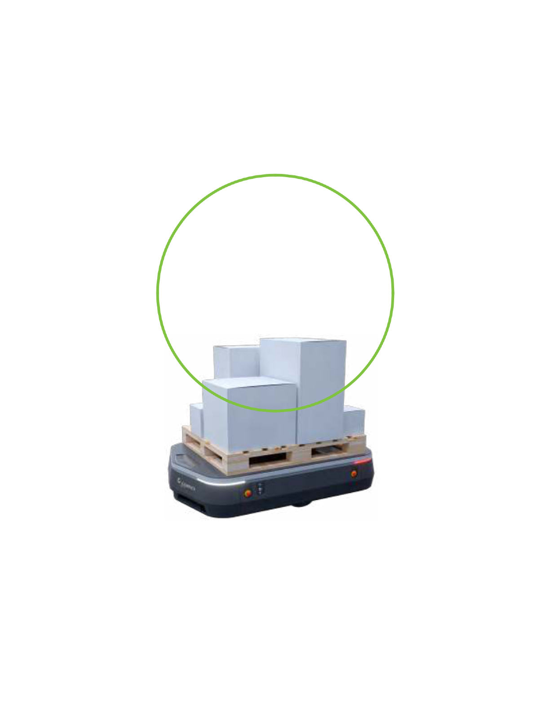

Private company issues and opportunities
Global considerations for 2019
For reference only, not to be distributed, or sold


Private company issues and opportunities
Executive summary
Mark Whitmore
Mennolt Beelen
Many people think of disruption as something to avoid. Synonyms for
the word—disturbance, interruption, distraction, interference—all carry a
negative connotation. But in today’s competitive business environment,
disruption can be a real positive—if you are embracing it and capitalizing
on the opportunities it creates.
Across the world, that’s the reality for many private companies. They are
acknowledging that the marketplace is more complex and fast-paced than
it was just a decade or two ago. It’s not just technology, talent, or
changing consumer behaviors and expectations driving this disruption—
it’s the interplay of all three. Truly innovative companies are proactively
combining those inputs to transform their business model, pivot quickly
in pursuit of new opportunities, and manage resources more efectively.
We undertook this report to provide a perspective for private companies,
drawing on the experience of nearly two dozen Deloitte subject matter
specialists around the world. We sought to uncover opportunities for private
companies to succeed in the current environment and drive disruption rather
than be disrupted. What we found is that the opportunities available to
private companies fall into three main categories.
The irst is using technology to get smarter. Of course, that means something
diferent for each company. Some are well positioned to use advanced analytics
to better understand clients, markets, and trends. Others can employ connected
devices through the Internet of Things to drive new insights. Still others stand to
transform customer interactions with artiicial intelligence.
4
Global considerations for 2019
The second category of opportunity is rigorous self-improvement when it
comes to supporting infrastructure. Technology has a hand here, too, with
innovations such as robotic process automation, which can not only take on
clerical-type tasks, but also reshape major parts of business functions such
as inance. Companies can also be more vigilant about cyber risk and
security and building cultures around stronger compliance. The opportunity
for constant improvement extends to managing workforces as well, as new
talent models provide more lexibility and access to in-demand skills.
Finally, many of the opportunities captured herein come from keeping the big
picture in mind. Whether companies are expanding their sights to new global
markets, taking on new partners through acquisition or joint venture, or
adopting best practices in governance to realize the beneit of independent
and diverse perspectives, success depends on stepping back from the day to
day and thinking strategically about what the competitive landscape is going
to look like not just next year, but ive to ten years in the future.
In the articles that follow, we track how these three themes are helping
private companies positively disrupt the status quo across many
business dimensions. We also point out where companies might be able
to do better. Never stop learning. That’s what we tell ourselves every day,
and it’s clear from the private companies we support the world over that
it’s a refrain as universal as their desire to succeed.
Mark Whitmore Mennolt Beelen
Deloitte Private Global Leader Deloitte Private Global Co-Leader
Deloitte Canada Deloitte Netherlands
5

Private company issues and opportunities
Disruption
6

Global considerations for 2019
Meet Otto, the autonomous
heavy-load material transporter.
The wheeled machine, which looks like an oversized loating computer scanner,
is capable of moving up to 3,300 pounds around a warehouse without incident.
It takes in its environment and learns, meaning that new obstacle somebody put
in its way is now part of its programming. Otto receives orders, reports on its
status, and notiies human operators of issues in real-time. And it has
revolutionized warehouse management and logistics as we know it in just a
decade: Otto’s maker, privately owned Clearpath Robotics, was founded in 2009
by a group of four University of Waterloo graduates.1
“In many ways, Otto is the manifestation of the exponential growth of
technologies and the disruption it’s causing across every sector of the
economy,” says Terry Stuart, Chief Innovation Oicer for Deloitte Canada.
“Where before we might have been talking about innovation sparked by
robotic process automation or artiicial intelligence or Internet of Things,
now we’re talking about all three in one package. It’s the layering of all
these technologies that is accelerating the pace of change, and it’s what
makes this time so exciting and also so scary.”
Technology isn’t the only force disrupting businesses in this
environment, but it has a hand in all of them. Increased globalization
stems at least in part from the Internet-enabled free low of information
across borders. Digitalization is upending talent models
across whole industries, leaving many workers dislocated and
companies struggling to ind replacements with new skills. Increased
transparency aided by technology is putting downward pressure on
pricing by empowering consumers and businesses to comparison shop
and force concessions. Social media has promoted greater corporate
social responsibility. And so on. And so on.
The power of the pivot
Companies that are succeeding in this environment not only recognize
these forces are colliding, but are adapting to the emerging business
landscape. “In today’s economy, those that are nimble and can pivot are
ultimately going to win the day,” Stuart says.
7

Private company issues and opportunities
“You’re going
to see the
smaller
companies
deinitely taking
advantage of a
wider range
of disruptive
brainstorming.”
Terry Stuart
Chief Innovation Oicer for Deloitte
Canada
Pivots can result in big payofs. Slack, the
immensely successful team messaging app,
started out as a video game.2 Pinterest was
a platform for people to browse and shop their
favorite retailers before transitioning into an
ainity app for housing people’s collections of
their favorite items and ideas.3
Starbucks as we know it today might not
exist if it hadn’t shifted its focus from
selling espresso makers and cofee
beans to opening cofeehouses.4
Then there’s the case of China’s Pinduoduo.
The company’s founder, Colin Huang, a
Chinese entrepreneur who started his career
in Silicon Valley, worked on early search
algorithms for e-commerce, and
returned to his native country to start his
own company.5 His irst company sold
consumer electronics and mobile phones,
but Huang realized it was too similar to other e-
commerce sites. Eventually, he realized he
could combine e-shopping with social
networking to create a shopping app in
which users earned discounts on purchases
when friends joined them. Pinduoduo was
founded in 2015 and recorded more than
100 billion RMD in merchandise sold just
two years later.
6
The company went public
in July 2018, raising $1.6 billion.7
“Pinduoduo caught the wave because it was
able to use technology to take advantage of
China’s slowing economy and the trend of
consumers wanting to spend less,” says
Roger Chung, a Technology, Media and
Telecommunications industry researcher
for Deloitte in Shanghai. “It’s a powerful
example of how private companies can
quickly capitalize on disruptive forces to leapfrog
the competition virtually overnight.”
Many private companies have an inherent
advantage in overhauling their business
model, Stuart says. As a group, they tend
to have more streamlined organizations
with less bureaucracy and direct access to
leadership. And they have less baggage
in terms of legacy IT systems and other
infrastructure, which means fewer sunk costs
and fewer integration issues to inhibit new
ideas. They also can maintain
a long-term perspective because their
shareholders aren’t pressuring them to
meet revenue projections each quarter.
“Private companies have some inherent
advantages in being able to deal with and
drive disruption,” Stuart says. “And in a
lot of cases, the ideas for new growth
don’t have to be all that new.”
Stackable innovation
Private businesses can easily turn to open-
source tech stack tools to lay the software
foundation for their next e-venture.
“There really aren’t that many ‘aha’
moments,” Stuart said. “The real
breakthrough innovations such as the
smartphone were decades in the making.
What companies are inding out is that
what’s more important are the processes
and people you put in place to take advantage
of it and getting out to market.”
What is diferent are the approaches
companies are taking to solve such problems.
Some are hosting “hack-a-thons,” which bring
a large number of people together over
several days to collaborate on computer
programming and scout next-generation
talent. Another increasingly
8
Global considerations for 2019
popular tactic is gamiication, a process of
taking something that already exists—a
website, an enterprise application, an online
community—and integrating game
mechanics into it to motivate participation
and encourage fresh insights. And then
there are crowdsourced competitions in
which companies challenge outside
innovators to pitch solutions to problems they’re
facing for a set amount of money. “You’re
going to see the smaller companies deinitely
taking advantage of a wider range of
disruptive brainstorming,” Stuart says.
Task orchestrators
One major constraint for any company
these days is talent—where to ind it, how to
land it, and how to hold onto it. Tight global
labor markets are intensifying the war on
talent, and many smaller private companies
don’t have the brand-name appeal of
public, multinational corporations.
Younger workers are doing some of the
disrupting by changing jobs much more
frequently than those from previous
generations. And recent trade disputes
and policy changes have slowed the low
of skilled workers across some borders.8
Past talent management strategies relied
on the education system structure. But
recruiters and employers are discovering
now that the same system isn’t keeping
up with the pace of technological change.
Artiicial intelligence and blockchain are two
examples where universities are struggling to
catch up. “The best talent available isn’t
necessarily coming from the go-to
educational institutions of old,” Stuart says.
Talent shortages are raising the stakes for
retaining top talent. Chung says a private
commercial satellite launch company
recently tried to recruit a scientist at a state-
owned enterprise in China with a 1
million RMB salary. They were rebufed
when the enterprise formally complained to
the government that it wouldn’t be able
to solve critical problems without him.
Few occupations are in such hot demand as
those that can ind and extrapolate data.
For example, job postings for data
scientists in the United States rose as
much as 75 percent between 2015 and
2018 at some job-search sites, and data
science PhDs now command starting
salaries of $300,000 or more.9
But even in the hunt for talent, technology is
ofering solutions. The rise of contingent
workers means many private companies can
scale up quickly without having to take on a
lot of overhead. The gig economy has
iniltrated almost every sector of the
economy, from health care to manufacturing
to inance. “Private companies are
For more information on this topic:
Roger Chung
Senior manager, Deloitte China
rochung@deloitte.com.cn
Terry Stuart
Chief Innovation Oicer, Deloitte
Canada testuart@deloitte.ca
increasingly becoming task orchestrators
rather than full-time employers,” Stuart said.
Preparing for quantum change
Even with the right talent on board,
private company leaders must work harder
to foster a culture of collaboration.
Business ecosystems are extending well
beyond companies’ own workforces,
extending across organizations, sectors,
and geographies. But the resources that
make up those ecosystems don’t connect
organically. In his book Where Good Ideas
Come From: The Natural History of Innovation,
author Steven Johnson argues that good
ideas generally evolve over time as “slow
hunches,” and that it’s only when you put
people together to share their hunches that
real innovation occurs.10
If that’s true, then the increasing
connectivity that governs business
interactions today is both a source
of disruption and an opportunity for companies
to do some disrupting of their own. “The
World Economic Forum is calling
this the Fourth Industrial Revolution,”
Stuart says. “Certainly this kind of quantum
change doesn’t come around all that often.
Every private company out there has to be
thinking about how this exponential curve
we’re on is going to afect them and how
they’re going to prepare for it.”
9
Private company issues and opportunities
Analytics
10

Global considerations for 2019
Professional athletes use data analytics for work, even when players are
of the job. Every team in the NBA has data analysts on staf.1 Coaches
use the technology to pick the best new recruits. Some players wear
monitors when they’re asleep to track the efects of fatigue.2 Whether in
professional sports or shipping, analytics has transformed how
organizations learn about their own performance.
Private companies are embracing analytic
insights with enthusiasm: In Deloitte’s
most recent global survey of private
companies, 62 percent of respondents said
they’re using technologies such as
predictive analytics to increase eiciency,
while 46 percent of respondents say the
technologies help them improve customer
engagement.3 Yet one of the biggest
challenges for private irms is inding the
right people to put data-related
technologies into action. In a Deloitte
survey of CIOs about the technical skills
that will be most diicult to ill over the next
three years, analytics and data science are
at the top of the list.
4
Companies that can
attract data scientists will put them to work
on projects such as immersive analytics—
which not only pinpoints digital
information but provides a mixed-reality
view of the assets—helping companies
further elevate their understanding of the
data that surrounds them.5
Issues
The shortage of professionals who are
proicient in analytics is a persistently
tough challenge for private companies as
they consider technology investments. The
technologies can ofer ampliied intelligence
that leads to faster transformation; the
solutions are more powerful than those of prior
generations; and, cloud-based access makes
them less expensive to acquire.6 But
the competition for data scientists who can
manage the technology is ierce. Job postings
for data scientists on the US platform
Indeed.com increased 75 percent from
2015 to 2018. Meanwhile, annual salaries for
data scientists at large consulting irms can
approach hundreds of thousands of US dollars
for candidates with doctoral degrees.7
“Even though the technology is getting
cheaper all the time, people who really
understand the technology are becoming more
diicult to hire,” says Tom Davenport, professor
at Babson College and independent senior
advisor to Deloitte Analytics.
“Private companies may have a hard time
getting those people and even when they
can get them, they’re going to have to pay
them a lot,” says Davenport, who wrote a
frequently cited Harvard Business Review article
on the job outlook for data scientists.8
Another challenge is prioritizing the data on
hand. Every minute of every day, there are
more than 3.8 million Google searches, for
instance.9 Enrico Cianci, senior manager,
Deloitte Italy, says private irms can’t aford
to overwhelm limited resources if they intend
to boost their analytics capabilities.
11
Private company issues and opportunities
“Companies
need a
response
that includes
analytics as
a irst line
of defense
backed
with human
judgment to
attack the
problem.”
Tom Davenport
Professor at Babson College and
independent senior advisor to
Deloitte Analytics
“Companies have to think about the kinds
of data they need to avoid information
overload,” Cianci says. “Rather than
collecting more data, use existing data
in a more highly targeted way.”
Data security is another area that requires
prioritization, according to Davenport. With
the continual threat of cyberattacks, he
points out that companies need a response
that includes analytics as a irst line of
defense backed with human judgment to
attack the problem.
“We don’t really have any choice but to
start to use analytics to predict threats and
respond to them,” Davenport says. “And
if we have a hack or breach that needs to
be investigated, that still requires human
intervention. There’s really no choice but to
start moving down this road, given the
number of potential threats every company
faces.”
Opportunities
The opportunities to achieve stronger
business outcomes through analytics are
vast. Private organizations are using real-
time analytics on global supply chains to
manage unpredictability, forecast demand,
and handle supplier issues. Companies
are using analytics capabilities such as
text recognition and machine learning
to decipher data in inancial records.
Manufacturing irms are using analytics to
better predict when physical assets need
servicing.
Francesco Sagrati, a manager for
Deloitte Italy, sees several main areas of
opportunity: gathering information about
markets; supporting marketing research;
12
improving internal processes; and, product
development. “Analytics helps mid-market
companies create accurate forecasts, model
business scenarios, and reach outcomes
more quickly than before,” Sagrati says.
Accuracy and speed are two advantages
private irms can seize as they invest
in prescriptive analytics, according to
Davenport. Prescriptive analytics
technologies can advise sales staf on the
optimal price to charge for products or
services. Or in a manufacturing setting,
the technology can alert staf about
maintenance and repair schedules.10
Davenport says another area of opportunity
for private companies is establishing “data
lakes” that are run on open-source software.
In comparison to traditional enterprise data
structures with information in rows and
numbers, the “lakes” house information in
unstructured formats—including videos,
audio streams, and social media posts—and
thereby allow for more diverse sets of data.11
“You can store anything in any format,”
Davenport says. He adds that while data
lakes are sophisticated undertakings for
many private companies, “there are so many
opportunities in analytics. You don’t have to
be on the cutting edge to get a huge amount
of value.”
Questions to consider
• Has your company performed a serious assessment of its readiness for analytics?
• How can you assemble a team with the appropriate mix of technical and managerial skills to be successful?
• In which business functions are you most likely to improve outcomes if you invest in analytics?
• How can your organization incorporate predictive and prescriptive analytics into its operations?
• Is your organization aligned around a common purpose and framework for analytics?
• Would you be able to change course quickly with analytics investments should conditions change?
For more information on this topic:
Enrico Cianci Francesco Sagrati
Senior manager, Deloitte Italy Manager, Deloitte Italy
ecianci@deloitte.it fsagrati@deloitte.it
Tom Davenport
Professor at Babson College and advisor to Deloitte Analytics
tom@tomdavenport.com
13
Private company issues and opportunities
Artiicial
intelligence
14

Global considerations for 2019
The exponential growth of artiicial intelligence (AI) has transformed
customer service departments, enhanced supply chains, and even
entered the realm of ine arts, where the world’s irst algorithm-
generated portrait recently sold for more than $400,000 at auction.1
Examples abound that demonstrate how the broad suite of machine
learning capabilities within AI have disrupted the business world.
From image recognition technologies
that can assess skin irregularities for
cancer detection, to voice capabilities that
layer audio onto video to create mouth
movements that mimic real speech, AI has
expanded the deinition of what’s possible
when machines learn patterns in the world
around them. In Deloitte’s 2018 global CIO
survey, 72 percent of organizations that are
considered “digital vanguards” put AI at the
top of their wish list.
2
As private companies
decide how to adopt AI or expand their
investments in the technology, they not
only have to contend with the question of
whether machine intelligence will create
value for the organization. Companies
also will need to grapple with the
responsibilities that come with the rise
of cognitive technologies.
Issues
Rapidly expanding interest in AI has created
an abundance of research on the topic. At
Google for instance, it is estimated that the
number of internal development projects focused
on AI is doubling every 18 months.3
Yet the picture is mixed among private
companies, many of which are still building
awareness around the technologies, says
Prashanth Kaddi, partner, Information
Management and Analytics, Deloitte Touche
Tohmatsu India LLP. Kaddi points out that
some CEOs at private irms have a strong
command of the issue and are ready to deploy AI
solutions. In other cases, there are CFOs and
other C-suite leaders who embrace the
technology, but haven’t been able to
assemble teams to build meaningful AI eforts.
There is yet another group of private
organizations, Kaddi says, that have brought
in venture capital investments and are ready
to engage with external
partners to start serious discussions around
introducing AI capabilities within their irms.
To help achieve those goals, private
companies need to overcome the
competition for talent with experience in
mathematics, neuroscience, philosophy, and
other disciplines that are in high demand for
AI positions, says Naser Bakhshi, senior
manager, Dutch Deloitte Consulting. Private
companies also need to enhance their talent
retention and development strategies.
“Acquiring talent is one thing,” Bakhshi says.
“But companies also need to retain talent,
and make sure this type of talent is also coached
in the right way.” Another challenge for
midsized irms: moving from early-stage
concepts to advanced AI use. “Transforming
ideas from proofs of concept and minimal viable
product stages to real products that produce
value is a challenge,” Bakhshi adds.
15
Private company issues and opportunities
“AI is in
every layer
of society
and our
commercial
ecosystem.”
Naser Bakhshi
Senior Manager
Deloitte Netherlands
Bias within machine learning programs is
another issue that organizations have to
overcome as they build AI capabilities.
There have been instances where AI-based
recruitment tools have taught themselves
to favor certain types of candidates, but
Kaddi says organizations can address some of
these issues with checks and balances. “Look
at the methodology, have audit trails to see
how models were coded, or have third-party
reviews,” Kaddi says. “Have fallback options
so if a pattern is emerging, there’s a
mechanism that can monitor the outcome.”
Opportunities
There are private companies that have taken
AI far beyond the concept stage. Some
retailers are using AI solutions to monitor
and predict consumer buying behavior. For
example, combining internal sales
data with external information, such as
customer segmentation and the weather,
companies can now make smarter decisions
about when to stock winter coats or other
seasonal items.4
Companies are also using AI to enhance
the human capital function by developing
optimization models for staing purposes,
Bakhshi says. One example is layering AI
onto real-time to continuously predict
when companies will need outsourced staf,
as opposed to depending solely on
historical data for scheduling. “We can
use that intelligence to ine-tune planning,
but of course, you combine it with human
knowledge,” Bakhshi says. “When we
talk about artiicial intelligence, people
tend to forget that it’s also about tacit
knowledge within the human brain itself.”
The sales function is another area in which
AI technology can give private companies a
competitive edge. Kaddi ofers the example
of a media company whose leadership
wanted to arm sales staf with numbers so
they’d be able to price their inventory better.
Separately, an appliance retailer that keeps
hundreds of diferent products in stock was
able to give the supply chain more accurate
information on which items to keep on hand.
“Across several geographies you can forecast
as precisely as possible what the sales will be
for a future period,” Kaddi says, adding that
the examples show how AI can help assess
demand, inform pricing, production, and
enhance employee performance.
16
Yet another use for AI is detecting fraud in
inancial services. E-commerce companies
can use AI algorithms to lag “repeat
ofenders,” as Kaddi says, who abuse
online retailers’ return policies.5 “AI can
give us a fair warning whether this person
is likely to commit fraud,” he says.
Bakhshi says organizations need to prepare
for universal adoption of AI technologies.
“AI is in every layer of society and our
commercial ecosystem,” he says. “It’s not
just for big tech companies. For private
companies, I would say identify promising
ideas and try to embed of that innovation in
your company.”
Questions to consider
• Does your organization understand AI, its potential, and how to begin the AI journey?
• How can your organization use AI capabilities to enhance some of its most routine functions?
• Where are the gaps in expertise you need to ill to build AI capabilities within your team?
• How might AI help your organization forecast events?
• Is there an opportunity for your company to use AI to enhance its supply chain?
• How will you manage ethical concerns, privacy, and concerns around bias that have emerged amid the expansion of AI?
For more information on this topic:
NASER BAKHSHI
Senior manager, Deloitte Netherlands
NBakhshi@deloitte.nl
Prashanth Kaddi
Partner, Deloitte Touche Tohmatsu India LLP
kaddip@deloitte.com
17
Private company issues and opportunities
Internet
of Things
18

Global considerations for 2019
Privately held companies depend on a range of technologies to
increase productivity, enhance customer service, and improve
outcomes for employees, whether those teams share a single oice or
are distributed across borders.1 Increasingly, irms operating in global
settings are turning to an intricately connected system of devices that
connect assets, information, and commands in a timely manner.
This network of objects, commonly known as
the Internet of Things (IoT), comprises a
suite of technologies that generate data
between locations. Through 2020, the
enterprise/industrial sector will account for nearly
60 percent of IoT spending, with consumer
companies and services irms splitting the
remaining expenditures in roughly equal
shares, according to a Deloitte analysis.2 The
real-world IoT applications are diverse—from
an emerging class
of personal health monitoring devices
connecting patients and providers to the
expansion of smart cities, where citizens,
devices, and infrastructure exist in a connected
ecosystem.3, 4 But connectivity for
connectivity’s sake doesn’t necessarily
translate to business value. Executives must
carefully evaluate the inherent complexities within
the innovations. The possibility of data
security breaches, the diiculties in connecting
disparate systems, and technical skills
shortages are among the challenges
private companies need to confront as they
convert IoT investments into business value.
Issues
Private companies have found that gaps
in preparedness are stunting their IoT
ambitions. A global survey of more than
1,800 IT and business leaders in 2017
showed that nearly three-quarters of
respondents’ IoT projects were failing.5
Among the most commonly cited challenges
are the technical complexity of implementing
IoT solutions, cost prohibitions, and inding the
right people with the skills to put the
technologies into use.
Another frequent misstep: neglecting to
carefully deine how to use the potentially
rich information gleaned from IoT devices,
says Michele Tarditi, Director, Technology,
Strategy and Architecture, for Deloitte Italy.
“Companies tend to look at IoT as a technical
issue, thinking about connecting their assets
without fully understanding what to do with
the data,” Tarditi says. “Some companies
collect the data only to then throw it away
because they don’t see the value in analyzing
and storing large quantities of data.”
That missed opportunity speaks to a related
issue—establishing clear objectives for the
use of IoT technologies across the business.
Sam Sluismans, consulting partner, Monitor
Deloitte in Brussels, says companies need to
do the groundwork to develop a feasible
proof of concepts as they consider IoT
technology. For instance, a company that is
deciding whether to connect its production
plants to the cloud should not only be aware of
the opportunity but also the challenges in
launching such an endeavor. “Many
companies struggle with the business
case, how it could work for them, what
the real business model will be, and what
conclusions they are going to be able to
take based on the technology,” he says.
19
Private company issues and opportunities
“IoT gives
companies the
opportunity to
know who their
clients are and
how they’re
really using
their product.”
Michele Tarditi
Director, Technology, Strategy and
Architecture, Deloitte Italy
Private companies also need to address
security challenges, which numerous
surveys have identiied as a key issue in the
deployment of IoT solutions. Sluismans
says one way to do this is by what he calls
“security by design.” Whether it’s door
locks on a smart home or an industrial setting
such as a wind farm, companies need to
ensure they aren’t giving hackers easy
access to IoT-enabled devices. “You
have to make sure that the sensors are by
design already protected so that the
data is encrypted,” Sluismans says.
Opportunities
The wide range of use cases for IoT includes
dynamic scheduling in manufacturing settings
to smart irrigation on rural farms. A Deloitte
analysis ofers a number of
examples that show how IoT solutions can
help organizations become smarter
planners, more skillful customer experience
agents, and stronger service providers.6
IoT-enabled devices can also help
organizations make curious discoveries. One
opportunity that arises as companies use
IoT-enabled devices is the ability to monitor
how customers are using products and
services once they are sold and distributed.
Tarditi points to a manufacturer of scientiic
measuring devices designed for the food
industry. While the company’s products
are used to measure qualities such as
nutritional content and test food reaction to
heating and stirring, in this speciic case,
their product was used by a restaurant chef
to stir and heat sauces in an extremely
precise way. For privately held irms without
large-scale distribution networks, the IoT
can ofer intelligence on clients and
unexpected information that can potentially
lead to new business lines.
“IoT can thus open up new unimagined
market segments. In the example, a product
designed for laboratories can become a
new appliance for restaurants,” Tarditi says of
the product. “IoT gives companies the
opportunity to know who their clients are and
how they’re really using their product. This
is something companies can only ind
out if products are connected, customers
are proiled, and data is monitored and
analyzed.”
Companies are making signiicant investments
to ensure that IoT technologies
become part of the corporate ecosystem; a
global projection anticipates companies will
spend roughly $15 billion on IoT integration in
the next three years.7 Sluismans points
to opportunities to use these investments
to help companies improve functions such
as process monitoring, helping to anticipate
maintenance issues, and provide essential
data on equipment in diicult-to-reach
locations. Sluismans cites examples such
as ofshore wind farms where sensors can
track the condition of underwater concrete
foundations, ofering technicians real-
time information on costly assets.
20
“This helps maintain infrastructure in the
optimal condition for as long as
possible,” Sluismans says.
Tarditi says companies looking to initiate or
expand their IoT pursuits should identify a
function or process that could beneit
from the use of connected devices and also
consider the broader picture of how the
technology can contribute to growth
across the business.
“It’s critical to have a comprehensive
strategy from the beginning,” Tarditi says.
“You have to know where you want to
extract value, what the applications should
do, what the beneits should be, and
how you can bring those beneits to the
company. “
Questions to consider
• Has your company taken steps to help your teams become familiar with IoT technologies?
• Have you developed a comprehensive vision for connected devices across your irm?
• Have you established a proof of concept and a path to test the concept?
• Have you thought about ways you can use the IoT to track your assets over time?
• Have you considered how IoT might help you get a better sense of how your products are being used?
• Have you thoughtfully examined your security procedures?
For more information on this topic:
Sam Sluismans
Partner, Monitor Deloitte, Brussels
ssluismans@deloitte.com
Michele Tarditi
Director, Deloitte Italy
mtarditi@deloitte.it
21
Private company issues and opportunities
Automation
(RPA)
22

Global considerations for 2019
The suite of technologies that mimic human behavior shows a great
deal of promise in the workplace. A recent Deloitte survey on
robotic process automation (RPA), which sets up software-based
rules for certain repeatable tasks, reveals that more than 80 percent
of organizations that are implementing or scaling RPA projects
report having a happier workforce.1
In addition, more than 90 percent of respondents
in the global survey believe that RPA has met or
exceeded their expectations
on productivity, compliance, and cost to
implement. Still, many organizations are
struggling to take these technologies to
scale: The share of organizations able to
achieve scale in their automation eforts in
the previous 12 months before the survey
had only risen by 1 percent.
As private companies consider how, when,
and where to automate, they’ll need to do
more than create code for recurring
processes. Experts who track trends in
automation say organizations need to
deine the right operating models for their
businesses, assess the potential risks that
come with the deployment of automated
tasks, and convince employees that
automation can help enhance the value
of work.
Issues
Companies may encounter a number of risks
associated with automation, starting with
issues at the data-gathering level, where
organizations take the irst steps in creating
the algorithms that govern repetitive
processes. Developers might have data
that’s incomplete or outdated. There could
be insuicient data or lawed collection
methods, creating a mismatch
between the inputs needed to train algorithms
and the data that’s needed to make
business decisions. Processing errors can
emerge when high-paced algorithms spring
into action. There are also issues with the
bots—the automated programs making
these processes possible—which may have
been programmed with bias in ways that
contravene laws or lead to discrimination
as some organizations have found
with automated hiring technology.2
Another issue private companies are facing
is taking automated processes to scale. In
Deloitte’s global automation survey,
just 4 percent of respondents say they
have scaled beyond 50 robotic processes.
One of the main barriers to achieving scale
is failing to deine how teams will acquire
the skills, capability, and capacity they
need to transform processes across an
organization. Yet another pitfall: failing to
grasp how the complexity of an automation
deployment difers from that of traditional IT
systems. Consider a scenario in which a
medium-complexity robotic process
implementation takes up to 24 weeks—
at which point a project might
become economically unviable.3
Private organizations also face security
challenges as they build automation tools.
Software bots frequently require access to
security credentials, users, systems, and existing
applications. Mike Schor, partner, Internal Audit,
Deloitte & Touche LLP, says teams need to
assess their risk management
capabilities as they incorporate automation into
their operations. To do so, he suggests that
organizations establish protocols that
take risks, users, and the functionality of
automated processes into account, and ask
tough questions.
23
Private company issues and opportunities
“Think of
why you’re
implementing
this
technology.
It’s not
just cost
reduction.”
David Wright
Partner, Private Sector Robotic
Process Automation Lead,
Deloitte UK
“How is your organization going to
monitor the risks?” Schor says. “Are you
appropriately testing solutions before
they go live? Who has user access? The
beneits should not just be about eiciency.
They should also be about efectiveness.”
Opportunities
Respondents in Deloitte UK’s global
automation survey ranked productivity,
improved customer experience, and
increasing automation as the top three
priorities for their organizations’
automation strategies.4 Each area presents
an opportunity for private companies to
improve the value of work and ultimately
provide a more meaningful experience
for employees.
By reducing time-consuming, manual
activities, organizations can focus on higher-
value activities and help people become more
productive through expanded horizons within
their roles, says Deloitte UK’s David Wright,
partner, Private Sector Robotic Process
Automation Lead, in London. In
a similar fashion, private companies can
elevate their customer service oferings—
in industries such as banking or retail—
when workers have the opportunity to carry out
personalized, public-facing functions.
“You reskill people away from some
transactional tasks and free them up so
they can then start thinking about
transformation within the
organization,” Wright says.
According to Schor, private companies
can tap the potential of automation to achieve
scale through activities such as the
processing of large sample sets. Another
advantage for fast-growth private
companies compared to their larger
counterparts: They may not have to contend
with legacy software structures and
therefore can put automated solutions into
practice without reinventing entire systems.
24
“Companies should be building with
these technologies and considerations
in mind up front as opposed to
building a manual process and then
trying to retroit them,” Schor says.
Wright says the opportunity to build
automation solutions from scratch also
comes with responsibility.
“Think of why you’re implementing this
technology,” Wright says. “It’s not just cost
reduction. It’s about accuracy and control,
better turnaround times, better customer
service, and employee satisfaction. Think
about what you want and design your
program around delivering those beneits.”
Questions to consider
• Has your company performed a high-level review across the organization for potential opportunities for automation?
• What are the security risks related to errors, access, and monitoring that could afect your organization’s automation investments?
• How have you prepared your teams for RPA implementation across the organization?
• Have you identiied tasks that are repetitive versus those consisting of complex logic that require human judgment?
For more information on this topic:
Mike Schor
Partner, Internal Audit, Deloitte US
mschor@deloitte.com
David Wright
Partner, Deloitte UK
davidcwright@deloitte.co.uk
25
Private company issues and opportunities
Cybersecurity
26

Global considerations for 2019
A basic rule of emergency preparedness is having a plan to respond to
disasters. Often, the dangers seem abstract until they have a personal impact.
Few people, for instance, would imagine a meteor speeding toward them from
the sky. Yet that’s precisely what happened in central Russia in 2013, when a
meteor blast prompted a massive shockwave that injured around 1,500 people,
causing more than $30 million in damage in the process.1
For most private companies, the common
risks aren’t cosmic but rather cyber in
nature—seemingly distant threats that can
nonetheless produce harmful results.
In 2017, researchers discovered more than
120 million new malware programs,
the equivalent of 231 new strains of malware
per minute.2 And it’s hard to ind qualiied
talent to help companies protect against
the threats. More than 300,000 US
cybersecurity jobs are currently unilled,
according to one estimate, along with
another 350,000 in Europe. A separate
report forecasts a global shortage of 1.8
million cybersecurity workers by 2022.3
The skills gap causes increased workload
on existing staf and means organizations
spend time on incident response when they
could otherwise be focusing on other
strategic pursuits. If private companies
want to stay ahead of cyber pressures,
they’ll need to move beyond basic
acknowledgement of the dangers and
build resources to actively prepare for such
threats.
Issues
While mid sized irms have boosted
spending on security solutions and hired
or contracted cybersecurity specialists to
address risks in recent years,
4
only about half
of respondents in Deloitte’s recent Global
CIO survey say they view security and data
privacy as a strategic investment.5 One
manifestation of this challenge is the
lack of a dedicated information security
oicer to track cyber threats and mitigate
the potential damage to the organization,
says Rocco Galletto, partner, Deloitte
Cyber Vigilant Practice in Toronto.
The absence of strategic direction from the top
can create cracks throughout an organization.
Galletto points to gaps in training and
protocols that can result in employees
inadvertently clicking on malicious links,
accessing websites afected with viruses, or
responding to seemingly harmless requests
that are actually spear-phishing attempts.
“User awareness training can be a good
countermeasure to know what’s legitimate,
how to identify certain
attributes within an email, or whether you should
open or click on a link,” Galletto says.
Peter Wirnsperger, partner, Deloitte Cyber Risk
Services in Hamburg, Germany, agrees. “We
can apply every technology that we can want,
but if the human irewall is not following
the rules, we still have a problem, and even
the best technology can’t protect us.”
Another concern for private companies in
the global environment is the enactment
of complex new rules around data security and
privacy. The European Union’s General Data
Protection Regulation (GDPR), which
imposes comprehensive digital privacy
controls on organizations and their
ecosystems, is one example.6 The GDPR went
into efect in May 2018. Failing to
protect consumer information carries
signiicant ines—up to 20 million euros, or
4 percent of annual global revenue,
whichever is higher.7
The EU regulation presents an interesting
dynamic for private companies that may
not have been accustomed to some of the
compliance-related duties of companies
in more heavily regulated industries such
as banking, Wirnsperger says.
27
Private company issues and opportunities
“If somebody’s
making a hole,
the boat
will sink.”
Peter Wirnsperger Partner,
Deloitte Cyber Risk Services
in Hamburg, Germany
A 2018 Deloitte poll taken shortly after the
GDPR went into efect showed that only
34.5 percent of nearly 500 professionals
surveyed said their organizations could
demonstrate compliance with the data
privacy rules.8
“In addition, some companies may say that other
security-related regulations don’t apply to
them,” Wirnsperger says. “There’s the need to
be a good corporate citizen and the need to be
a good manager, yet companies have been
working without making many of these
security investments.
When people actually start to think about
regulations, they realize that they’ll
have to improve things.”
One of the key provisions of GDPR is around
the management of customer data, such as the
right to opt out of online tracking, regardless
of where the consumers are from. Privacy
rules are also establishing new
parameters for the use of customer data in
other regions such as Canada, where an
anti-spam law generally blocks companies
from sending email promotions without
prior consent from the intended recipient.9
Actions on the consumer side comprise
another area of concern for company leaders.
Case in point: a 2017 Deloitte survey found
that 91 percent of US consumers accept
mobile user agreements without reading
them, with the igure climbing to 97 percent
among 18- to 34-year-olds.10
Galletto says private companies need a
global understanding of rules as well
as consumer behaviors and their efects
on a borderless marketplace.
“It’s important to have someone who at
least understands what information the
organization is collecting about users,
understanding the sensitivity of the
information that they’re holding,” he says.
Opportunities
One way to raise awareness of
cybersecurity threats is by bringing real-
time, security-focused training opportunities
to the workplace. Companies can conduct
simulated phishing campaigns to track how
employees respond to supervised intrusion
attempts. “You’re teaching in the moment,
educating users, and reminding them about
conidential information versus publicly
available information,” Galletto says.
Companies can also encourage habits that
minimize risks. Cyber-related education
tips posted daily on a company Intranet site
reminding users not to click on certain
links, or reminders on clues about phishing
techniques such as misspellings or tone
that doesn’t it company style are other ways
to raise awareness, Galletto says.
In scenarios where third-party vendors
have access to private company data,
another opportunity is formalizing security
procedures for suppliers. Just like quality
control standards for original equipment
manufacturers, providers of services to
private companies also need established
rules to assure how they’ll handle
proprietary data.
28
“Many industries have started third-party
insurance programs,” Wirnsperger says.
“You have to build trust and ensure that
everybody obeys the rules.” He uses a
seaborne example: “Everybody is in the
same boat. If somebody is not rowing, the
boat slows down. If somebody’s making a
hole, the boat will sink.”
Questions to consider
Another consideration for private
companies is including managed services
for their cybersecurity needs. That requires
an assessment of potential problem
areas and a careful examination of a
company’s operating model to see if there
are structural changes that can make the
organization more secure.
“Identify the critical assets your business
relies on,” Wirnsperger says. “It’s important
to have a truthful assessment to ind the
best way to protect your assets over the
long term.”
• Has your company completed an analysis of data security vulnerabilities across your business and taken steps to address them?
• Do you have a plan of action in the event of a cyber-related incident?
• How can you manage the talent shortage to recruit, build, and retain a team with security expertise?
• How might a managed security services model help meet some of your data security needs?
• What processes do you have in place to promote employee awareness of how to access proprietary information and customer
data, as well as restrictions on sharing this information?
• Is your company well prepared to comply with both domestic regulations and global information security and privacy
rules that might afect your business?
For more information on this topic:
Rocco Galletto
Partner, Deloitte Canada
rgalletto@deloitte.ca
Peter Wirnsperger
Partner, Deloitte Germany
pwirnsperger@deloitte.de
29
Private company issues and opportunities
Finance
transformation
30

Global considerations for 2019
Today, private company CFOs need 360-degree awareness. They’re
charged with keeping pace with the inancial implications of the blistering
rate of change afecting virtually every industry, while at the same time
diverting a good part of their attention to considering a future that could
look drastically diferent than the present.
Fortunately, digital technologies such as
cloud computing and robotic process
automation (RPA) are helping with the irst
part. But the disruption is far from over—in
fact, it’s probably just begun—and many
private company inance chiefs are
struggling to ind the right mix of technology
and talent that will position them as
strategic partners to ownership and
their C-suite counterparts.
Issues
Businesses expect more than ever from
their inance departments, both in terms
of reporting and strategic input, but many
are coming up short when it comes to
delivering real-time insights to help the
strategic planning process.
Today, new digital platforms and
applications are enabling leading irms to
automate many accounting processes that
once proved time-consuming and costly.
But many private companies are
hesitant to adopt such solutions because of
the up-front costs involved, even though
their current processes might not be
supporting the business in the ways now
required. In other cases, there may be a
lack of understanding of transformative
solutions enabled by innovations such as
robotic process automation and
blockchain. Companies can end up
playing an endless game of catch-up
rather than setting priorities.
“The cost of the traditional inance function
is still quite heavy, and spending is mostly
reactive,” says Damien Bones, a partner in
Deloitte Private’s commercial advisory
practice in Sydney. “Finance needs not
only to streamline, but also start viewing
operational challenges through a forward-
focused lens.”
Then there’s the role that inance has typically
played within private organizations, and how
it’s evolving in response to rapid changes in
the business environment. Steady economic
growth and the pace
of technological change has prompted
business owners and CEOs to
increasingly look to their inance chiefs
for guidance with major decisions.
In this, inance chiefs are now being asked to
wear “four faces.”1 They still need to
serve the two traditional roles of steward,
protecting the assets of the organization by
minimizing risk and managing the
company’s inancials, and operator, running
a tight inance operation that is eicient and
efective. But now private company owners
and others in the C suite are increasingly
relying on them as strategists, helping to
shape overall strategy and direction, and
catalysts, instilling a inancial approach and
mindset throughout the organization to help
other parts of the business perform better.
That, in turn, is forcing a rethink of the types
of skills that are now required within the
function. But labor and skills shortages
continue to plague many inance leaders, as
evidenced by Deloitte’s quarterly CFO
Signals surveys conducted around the globe.
Labor shortages top the list of domestic
concerns among 67 percent of Japanese
inance chiefs, and US CFOs call the issue
their top internal risk. Meanwhile, 44 percent
of CFOs in the United Kingdom report that
recruitment diiculties or skills shortages
have increased.2
“A lot of private companies are asking
themselves: How do we support the needs of
the business without necessarily going for
a traditional inance- or accounting-related
person?” Bones says. “Because that
doesn’t quite make sense any longer, from
either a supply or demand perspective.”
31
Private company issues and opportunities
“This could
revolutionize
a lot of
industries.”
Anthony Day
Chief operating oicer of the
Deloitte EMEA Blockchain Lab in
Dublin, Ireland
Opportunities
Rather than upgrade to an expensive, all-in-
one technology solution, private businesses
should consider products that it their scale,
says Bones. Cost-efective but powerful cloud-
based inance software options are available to
companies with less than $25 million in annual
revenue. These solutions can automate
traditional accounting services, such as time-
consuming month-end related activities.
Companies with multiple business
units can spread the rewards from an
initial investment even further.
To be sure, some more advanced technology
solutions may be worth the extra
expenditure, particularly when inance is
being asked to deliver deeper insights into
the performance of the business. Cognitive
tools are now available that can analyze dozens
of complex inancial models in a few minutes.
They can spot a single variance in a billion
transactions. And they can be used
in audits to eliminate risks associated with
sampling. This is an area undergoing rapid
development, but many inance chiefs at
private companies are caught up in day-to-day
challenges and haven’t had the time to explore
the eiciencies a cognitive future could deliver.
3
In a recent CFO Signals survey,
only 42 percent of those polled said their teams
are familiar with cognitive solutions,
but 2019 will likely see that number continue
to rise.4
Blockchain is another technology that
may not be well understood by private
companies. Many still are unable to
distinguish between blockchain and the
cryptocurrencies that rely on the shared-
ledger technology. They don’t understand
how a shared-ledger platform enabled
by blockchain could eradicate errors,
strengthen transparency and trust, and
redeine how they engage with their
customers and suppliers. Through the
blockchain, for instance, a livestock company
could produce a “digital twin” of every head
of cattle sold, complete with information on
its genetic data, its veterinarian history,
and the quality of feed stock it was fed.
This increases the depth and breadth
of data that can be collated to increase
transparency, comply with ever-changing
regulation, or add value to inished goods.
“The potential of blockchain is enormous,” says
Anthony Day, chief operating oicer of the
Deloitte EMEA Blockchain Lab in Dublin,
Ireland. “We’re talking about creating
immutable records that can’t be tampered with
and which can digitize and increase
automation for nearly every transaction
performed by inance today. This could
revolutionize a lot of industries.”
Day says the key for private companies
looking to unpack blockchain is to
consider the problems they’re trying to
solve with it. Blockchain is primarily a
platform technology, and the platform
needs to be built, which can be expensive.
32
In some cases, an existing platform may
already exist, or several companies in
the same industry may be interested in
joining forces to create one. In other
cases, private companies may not have
the scale or business imperative to make it
worth such an investment at this time, Day
says. Blockchain is as much a technology
for multiple companies, even traditional
competitors, to work with as much as it is for
individual companies to enhance their own
technology infrastructure.
There are questions private company CFOs
need to be asking themselves in virtually
every aspect of their role: “What is our
winning aspiration? Where will we play, and
how will we win?” Because sooner rather
than later they’re going to be asked by
others, Bones says. “Private companies tend
to have less crowded C suites, so the CFO
becomes the go-to person for the business
owner or CEO when it comes to considering
any business move that’s critical to the
business.”
That will mean placing the right people
around them—think analysts instead of data
entry clerks, as well as developing a core of
those with “soft skills” who can communicate
with internal and external stakeholders
as well as they crunch the numbers. “The
inance stafers of tomorrow are the ones
who can get along with and partner with the
rest of the business,” Bones says.
Questions to consider
• Has your company done all it can to automate traditional accounting tasks, so you can focus on adding greater
value to the business?
• Is your inance organization operating as a partner with your business units and providing insights to drive decision making?
• Have you considered digital inance solutions that align with your company’s scale and ambitions?
• Have you evaluated how blockchain might transform your industry and the ways in which you might take advantage of it?
• Do you have the right mix of talent to accommodate new technologies and start delivering forward-looking insights?
For more information on this topic:
DAMIEN BONES
Partner, Deloitte Australia
dbones@deloitte.com.au
Anthony Day
Director, Deloitte Ireland
anday@deloitte.ie
33
Private company issues and opportunities
Future
of work
34

Global considerations for 2019
The robots aren’t just coming—they’re already here. Walk into one bank’s
branch on Fifth Avenue in New York City, and you will be greeted by a humanoid
robot named Pepper, who at various turns will ofer you a credit card, help you
compete an application, and even take a selie with you.1 As machines
increasingly take on tasks once performed by humans, many private companies
are grappling with what it will mean for their workforces going forward.
Automation and artiicial intelligence are among
the potential shifts that could change
the nature of work in every sector of the economy.
Most see a future—possibly a very
near future—in which robots and humans are
working side by side. It’s an evolution likely
to be driven by tech-savvy millennials, who
are already shaping new consumption
behaviors. And it’s one that will likely alter
historical expectations about the nature of work,
with the emerging gig economy as one
prominent example. Talent development
and workforce diversity also will likely take on
more urgency, as will inding the right
workspaces to accommodate these changes.
Issues
Around the world, many who want to work
aren’t having any diiculty inding jobs.
Decades-low unemployment in many
developed markets is a challenge for
employers trying to keep pace with demand
for their products and services. In a Deloitte
Private global survey of 1,900 executives
from private companies, the ability to hire
and retain employees was listed as one of
the top risks to their company’s growth.2
Yet, with the speed of change and the
amount of technology-driven disruption
companies are facing these days, they risk
hiring workers with skill sets they might not
need for long. New research by the
Organisation for Economic Cooperation and
Development (OECD) suggests that one out
of every seven jobs across its 32 member
countries is at high risk of being automated,
but one out of three may experience signiicant
changes in how they are carried out.
3
For its
part, the World Economic Forum
projects that robots will eliminate 75 million
jobs over the next ive years, but create
133 million new ones.4
Organizations recognize that if they add
the wrong kind of talent, they might meet
near-term needs but will ind themselves
back in the same position in the future, says
Philippe Burger, leader of Deloitte’s Human
Capital practice in France. Not only
are such decisions costly, but there are also
signiicant reputational ramiications
involved with being perceived as a “job-
destroying company,” Burger says.
“Companies that don’t efectively manage
the interaction between workers and
machines and the social impact of any
workforce changes could very well
face a signiicant backlash.”
It’s not just customers that private
companies need to impress in that respect.
Millennials, who are forecast to make up
almost 50 percent of the global workforce
by 2020, are keenly attuned to corporate
social responsibility and are more interested in
working for those who share their values.5
They also tend to seek diverse colleagues,
lexible work arrangements, and ongoing
opportunities to learn new skills, according
to the 2018 Deloitte Millennial Survey of
more than 10,000 millennials across 36
countries.6 As the generation that changes
job most frequently and is opting out of the
traditional workforce by participating in the
gig economy, many millennials don’t stay
with the same employer for longer than a
few years, Burger says.7
Private companies can have a hard time
competing for younger, skilled talent, in part
because many are family-owned businesses
that put a premium on heritage and loyalty.
Many also lack the brand-name recognition of
large, multinational corporations. Burger adds
that it’s easier than ever for job
candidates to research potential employers
in the private sphere, including whether
they have diverse workforces and are
considered good corporate citizens.
35
Private company issues and opportunities
“A lot of
private
companies
could beneit
from thinking
about how
existing skills
might apply
in the future.”
Philippe Burger
Leader of Deloitte’s Human
Capital practice in France
“There is much more transparency now than
in the past,” Burger says. “People can see
what’s happening inside and outside an
organization. It’s very diicult to behave
diferently within an organization than what
you claim on the outside. Now, more than
ever, it has to be consistent.”
Finally, as the nature of work changes, so
are the physical spaces where that work is
performed. The oice environment could be
in for some big changes that go beyond the
likely contraction of space required as more
processes are automated and more people work
remotely.8 Internet-enabled devices and IoT
technology are giving rise to a new wave of
smart buildings that help companies better
manage their energy usage and alleviate
security concerns.9 In addition,
as companies become more aware of the
relationship between workers and work,
there is an increased focus on areas such as
wellbeing, sustainability, and productivity.
Many companies are addressing footprint
optimization strategies, along with
workplace design, as tools to leverage
their real estate and workplace investment
toward the employee value proposition in
the war for talent.
“Already, technologies such as the cloud are
enabling employees to work anywhere at any
time,” says Sheila Botting, National Real Estate
Leader for Deloitte Canada. “Within the future
of work, emerging technologies are going to
push that further by fundamentally changing
the physical environment for businesses. As a
result, trying to get ahead of those trends and
‘future prooing’ real estate decisions are
among the big challenges companies are
facing.”
Opportunities
One way to hunt for the relevant and
transferable skills is to keep track of which
ones are in demand. Burger’s group recently
analyzed 15 million job postings over the past
year, to ind out which skills were in the
greatest demand and which ones were fading.
“With the availability of data these
days, you can track the trend lines on skills
falling in and out of favor,” he says.
“You can also start to build the bridges
between one competency and another.”
One French company needing workers to
build power transmission towers recently
turned to an unlikely place when they ran into
an acute shortage of welders: the domestic
lace industry. One of the casualties of
globalization, lace makers in France have
nearly all gone out of business due to
competition from emerging market countries
with cheaper labor.10 “Lace manufacturing
and welding are both high-precision jobs,”
Burger says. “Instead of trying to ind
welders, they started hiring lace workers and
training them to do the work. A lot of private
companies could beneit from thinking about
how existing skills might apply in the future.”
If they aren’t already doing so, private
companies also need to start getting ahead
of demographic trends that will reshape
the workforce in the years to come. In the
United States, for instance, current census
projections predict that women may well be
the dominant source of economic growth
in the future.11 People are also living a lot
longer, prompting many workers to put
of retirement and stay at their jobs.12
These trends represent opportunities to
generate new insights and aid the transfer
of information from one generation to the
next, particularly at private companies whose
management teams may not have changed
much over the years, Burger says. “Instead
of considering employees by age,
36
Global considerations for 2019
tenure, or geography, we’re encouraging the
companies we work with to see them as a
collection of skills and knowledge that when
brought together can generate new ideas.”
That also means treating workers fairly when it
comes to compensation and promotions.
Human capital departments are becoming
more sophisticated in their use of employee
data to identify patterns of gender and
racial bias, disparities in compensation and
rewards, and bias in hiring and promotion.13
Others are strengthening their social impact
by requiring that their suppliers and other
business partners provide metrics for
diversity within their organizations.
When trying to manage the real estate
footprint, Botting says companies need
to prioritize scalability. She believes
many private companies can learn from
the example of banks and retailers that
have scaled their oice footprint toward
availability and technical capability and workforce
requirements.14 “Private companies may enjoy
a real advantage here, as they’re typically
nimble and can change
course pretty quickly as their needs evolve,”
Botting says.
Coworking space, also known as “Space as a
Service,” might be another attractive option.
Even larger companies are turning to
coworking solutions to maintain lexibility,
keep their costs down, and make use of an
expanding pool of on-demand workers in
the gig economy. Many are discovering
other beneits to such facilities, including
opportunities to connect with start-ups and
growing businesses that could be good
candidates for business partnering, as well
as identify job candidates. They are also
learning to watch out for potential issues
with extending their enterprises into these
spaces, including privacy and cyber risks
from using shared networks.15
“Managing the long-term footprint of the
business is increasingly important,” says
Botting, who believes every private company
should work in close concert with a chief
innovation oicer in projecting future real
estate needs. “Private companies, which
aren’t up against quarterly demands to hit
their numbers, should have more time to manage
this challenge and get ahead of some of these
workplace-disrupting trends.”
Questions to consider
• Has your company allocated enough time in the strategic planning process to assess how emerging technologies will
reshape your workforce needs?
• Do you have a collection of skills in your workforce that can adapt as technology reshapes the nature of work?
• Have you considered nonconventional candidates with similar skills (e.g., onshore, ofshore, part-time, contract) to
staf job openings challenged by labor shortages?
• What are the implications of these changes for your organizational models?
• What is your company doing to ensure that your workforce and future leaders are representative of your customer base
and the population at large?
• How can diverse and inclusive workforce teams help to solve business challenges?
• Have you considered the social impacts of these upcoming changes and the best way to transition to the future of work?
For more information on this topic:
Sheila Botting
Partner, Deloitte Canada
sbotting@deloitte.ca
Philippe Burger
Partner, Deloitte France
PhBurger@deloitte.fr
37
Private company issues and opportunities
Globalization
38

Global considerations for 2019
Despite a year in which trade conlicts have dominated the headlines,
globalization is still marching ahead, but on a slightly diferent path.
Before, globalization was trade-based and led by Western powers.
Now, globalization is being driven by digital technology and is
increasingly led by emerging economies in Asia.1
As a result, private companies are
participating in the global economy more
than ever and learning to address the
myriad issues that come from operating
with extended range, such as geopolitical
pressures, local and regional regulations,
and widely diverse labor pools.
Issues
For all its beneits—access to new, fast-
growing markets and lower costs often
chief among them—globalization has made
private companies more vulnerable to the
domestic policies of other countries.
The escalation of trade tarifs between the
United States and China is a case in point.
Even small and midsized American
companies that have shifted manufacturing
back to US factories report being hurt by
the latest round of tarifs, as the supply
of components made elsewhere is being put
at risk by new trade barriers.2 Then there’s
Great Britain’s decision to leave the
European Union; “Brexit” has created a lot
of uncertainty around how trade will be
conducted in the future between the UK and
other members of the economic bloc.
But the speed of change driven by
technology means companies focused only
on their domestic market might not last
long. Competition can come from anywhere
and at any time, and what looks like an
established competitive advantage
today could be erased tomorrow.
“Everything is so interconnected these days
due to globalization,” says Willo Renehan, a
tax partner for the Deloitte private markets
team in London. “There is just so much
uncertainty and there is a real risk of being
left behind if companies let it paralyze them.
The level of disruption is fast and getting
faster. If you have a good idea, you need to
get out there quickly and get your markers
in the ground to fend of competition that is
increasingly coming out of nowhere.”
Not all overseas ambitions are being driven
by internal conversations. In a lot of cases
they are being prompted by customer
demands. One software-as-a-service
company in Melbourne, Australia, was
approached by one of its biggest corporate
clients about providing the same service in
Europe and Asia. “The customer is literally
dragging them into the global construct,”
says Mark Allsop, a partner at Deloitte
Private in Melbourne.
That doesn’t mean that entering the global
marketplace will be easy, Allsop says. A lot
of smaller, private companies he works with
lack the experience and internal capabilities to
manage an overseas expansion. There are
many decisions to be made, including
where to go, whether to expand across
borders organically or through acquisition
or partnership, and what kind of operation
will be needed on the ground to get up
and running. Private companies might
also lack the brand recognition to
attract locally sourced talent.
Then there are the regulatory hurdles, which
add another layer of complexity. “Private
companies may not have the systems and
structures in place, or the balance sheet
strength, to do everything their customers
are asking them to,” Allsop says. “They
have to make some diicult choices around
what they’re able to do and they have to
say ‘no’ to, and that can be a bit of a risk.”
39
Private company issues and opportunities
“Globalization
is deinitely
continuing,
and in some
ways, the
latest trade
disputes
are driving
the global
agenda.”
Willo Renehan
Partner, Deloitte UK
Another issue is lack of trust. In the past,
private companies could take their time
building relationships with their suppliers
and other partners, initially giving them a
little business to see how they handle it
before expanding the relationship. But to
fully exploit the opportunities presented by
globalization, private companies need to
extend their trust more quickly—and maybe
before they’re completely ready to do so. “It’s
a tricky business,” Allsop says. “We hear the
horror stories of the things that have gone
wrong, but it’s harder to ind the stories of
when things have gone really well.”
Opportunities
Despite the recent run of protectionist trade
policies, globalization remains alive and well.
The digitalization of the global economy and
advances in cloud computing in particular,
have made it far easier for even small and
growing companies to learn about other
markets and access them at a fraction of
the cost.
Consider an Australian fast-moving
consumer goods maker who was able
to quickly transition from the domestic
market to serving other markets in Asia.
Its products are designed in Singapore,
manufactured in various parts of Asia
through the help of an outside contractor,
and supported by a large pool of
contingent employees working out of a
coworking space in Melbourne. That
interconnectedness makes scaling up
much easier to manage than it used to be.
In some ways, new barriers to trade are
creating new opportunities for private
companies looking to make the leap into
global markets. The US-China trade conlict
is opening doors to suppliers in Australia
looking to enter the Chinese market at a
time when the value of the Australian dollar
is quite low, Allsop says. Renehan says
many businesses in the United Kingdom
are now looking to set up oices in other
countries amidst the uncertainty caused
by the Brexit negotiations.
“People are talking about Amsterdam, Paris,
and Frankfurt,” Renehan says. “They’re
looking to get people on the ground in those
markets, just the bare minimum to start.
Likewise, we’re starting to see companies
based elsewhere in the EU having to establish
in the United Kingdom because otherwise they
wouldn’t be able to operate here. Globalization
is deinitely continuing,
and in some ways, the latest trade disputes
are driving the global agenda. We’re
seeing a spike in investments.”
Of course, choosing the right location is
critical. Private companies need to think
through many dimensions involved, from the
tax and legal environment, to the local and
regional economies, and even political
stability.3 Securing and managing talent in
foreign markets is also pivotal to successful
forays. Job proiles and hiring criteria need to
satisfy both global standards and local
realities. Employees in foreign jurisdictions
might also have diferent perspectives
on how to be efective and what the right
compensation and incentives look like.4
40

Global considerations for 2019
In this, private companies need to apply the
same data-driven focus they apply to
managing variables such as labor costs.
Rather than conquer a new territory under
their own banner, it might make more sense
in some cases to line up a channel partner in
the target market. These kinds of decisions
need to be approached in a calculated
way, by irst deining the investment,
then choosing the structure it should
take, and then evaluating what other
options might or might not be available
in the future if conditions change.5
These are good questions to ask even for
established businesses in international
markets. As we’ve seen, supply chains
can be put at risk at only a moment’s
notice in the current environment. Private
companies need to understand where their
raw materials, parts, tools, fuel, and other
inputs are coming from, and how reliable
their supply is likely to remain.
Globalization means that businesses
can’t overlook that value chain.6
The lack of corporate bureaucracy at
many private companies can tend to be an
advantage in working out issues that arise
across these dimensions. Large, public
companies that are subject to shareholders
and risk-averse corporate boards tend to
be less willing to make investments
during times of heightened uncertainty.
“Private companies typically can be more
nimble, can spot issues and work around
them more quickly,” Renehan says.
“There’s greater appetite for risk-taking
and an overall sense that if an investment
doesn’t work out, they’ll just tweak it to
see if they can make something out of it.”
Questions to consider
• How might global trade disputes impact your business in the coming year and what will you do about it?
• Does your company have the expertise in-house to understand the regulatory, legal, and other complexities involved with
entering a new international market?
• Are any customers likely to ask your company to support them in new international markets in the coming year, and
will you be ready?
• Have you considered expanding internationally with the help of a channel partner?
• What are you doing to source talent from other countries, and do you understand all the dimensions you’ll need to
master to manage them efectively?
For more information on this topic:
Mark Allsop
Partner, Deloitte Australia
mallsop@deloitte.com.au
Willo Renehan
Partner, Deloitte UK
wrenehan@deloitte.co.uk
41
Private company issues and opportunities
Governance
42

Global considerations for 2019
Private companies have always had to manage increasing complexity as
they grow, but the pace of change today means they need to be more
sophisticated in terms of corporate governance. Some of this is being
driven by increasing regulatory requirements across the globe, as well
as risks being introduced by technology and the sharing of information.
But at a broader level, with new risks,
whether regulatory, geopolitical,
competitive, or marketplace to name a few,
boards may need to be more engaged in
the business than in the past. With this
increasing need for additional perspective
about strategic choices and related
disruptive risks, some private companies are
bringing in outside perspectives, adopting a
more holistic view of strategic risks facing
the business, and engaging in regular
discussions about disruption and how they
plan to drive or at least get ahead of
large competitive shifts in the future.
Issues
Governance at private companies runs a
wide spectrum. At one extreme are private
equity-backed businesses with oversight
and more stringent reporting requirements
and accountability imposed by the owner
investors; while at the other extreme, there are
smaller, start-up businesses that may not have
a formal governing body. But no matter their
governance orientation, most private
companies are dealing with new challenges
related to technology disruption and
competitive threats to their business models.
“Private companies are being challenged
by the rapid advance of technology and
how it’s disrupting business as we know
it,” says Maureen Bujno, a managing
director with Deloitte LLP’s Center for
Board Efectiveness. “So, when it comes to
managing strategic risks, technology is
near the top of everyone’s lists right now.”
Technology also increasingly represents a
compliance risk. In Europe, the General Data
Protection Regulation (GDPR) took efect in
May 2018, mandating that any company
that does business in the European Union
and the European Economic Area have
appropriate technical and organizational
measures to protect personal data and
privacy.1 The Chinese government recently
went a step further. New national standards
include more onerous requirements for
how personal data is collected, stored, and
shared. And, if enacted, new legislation
proposed in the United States could result
in prison terms up to 20 years for executives
who violate privacy and cybersecurity
standards.2
Svetlana Gandjova, a partner with Deloitte’s
inancial advisory practice in Vienna, says the
threat of reputational harm posed by such laws is
prompting private company boards to
strengthen their compliance capabilities and
think more strategically about managing risks.
“In Europe, private company governance
structures are driven mostly by laws,”
Gandjova says. “The pressure is often coming
from large corporations that are their
clients or suppliers and require more robust
compliance programs (e.g., anticorruption
and antitrust commitments, ight against
child labor, environmental compliance). It’s
motivating companies to implement
stronger governance processes. They
simply can’t risk the reputational damage
attached to being noncompliant.”
Talent represents another area requiring
board attention. Workforce needs are
changing dramatically as new technologies
take root, and private companies that aren’t
thinking strategically about what skills
they will require in the future could limit their
growth potential. In addition, private
companies increasingly need business
leaders who are knowledgeable about
international business practices and customs
as companies continue to expand globally.
43
Private company issues and opportunities
“Private
company
boards need
to be engaged
in terms of
dealing with
the heightened
potential for
disruption.”
Maureen Bujno Managing
director with Deloitte LLP’s
Center for Board
Efectiveness
When it comes to improving governance
models, family-owned businesses can
prove particularly slow to evolve because
of family members who remain invested in the
business but may no longer be actively
involved. This makes it diicult not only to get
ahead of forces shaping the competitive
environment, but also to cultivate the next
generation of leaders.
Opportunities
At a time of such transformational change,
any business can be the one driving
disruption in a certain industry. But that
doesn’t just happen organically, Bujno says.
Private company leaders should carve out time
to identify big shifts in their markets and
role-play diferent scenarios in which an
unexpected source of competition, or other
risk, upends a core business. They also
should conirm that any new technology-
fueled initiatives have an explicit goal in
mind, such as solving a current problem
or targeting a new market segment.
“One of the key things I’ve seen is a shift
around strategy and an awareness that
private company boards need to be engaged
in terms of dealing with the heightened
potential for disruption,” Bujno says.
Bujno says engaged private company
boards exhibit several key attributes. Board
members have a good understanding of the
business and a practical mix of skills and
experiences, which may require a need for
independent board members. This last point
is especially critical today due to the pace of
change. Independent board members can
bring knowledge, expertise, and skills that
CEOs and senior management may not
have. They may also have irsthand
experience from working with other
organizations facing diicult challenges.
And they are far more likely to constructively
challenge the views of other directors.
“Independent board members often provide
objective and valuable insights about what
they’ve seen happening in other industries,
and those insights can help businesses decide
whether they want to be driving disruption or
staying ahead of it,” Bujno says. “Having an
outside perspective may be
particularly important to controlled entities
where they just have insiders in charge and
certain skills and experiences may not be
resident.”
Risk management is one area in which
private companies have historically lagged
but are making strides to close the gap.
In the past, risks were independently
managed by each business unit and
this decentralization lent itself to an organizational
lack of awareness and sharing of information.
Today, top strategic risks are regularly
communicated to the board at regular intervals.
Private companies are also incorporating risk
monitoring, measuring, and reporting at an
enterprise-wide level.
Private company boards are seeing the
beneits of increased focus on managing
risks and implementing compliance
programs. On one side there is less
regulatory exposure for the boards and on
the other side is strengthening brand and
reputation of the companies. As recently
as ive years ago, many companies might
have had just one person from the legal
department covering some compliance
aspects. “Now there are dedicated teams
focused solely on compliance,” says
Gandjova, adding that some of the
change is being driven by generational
transfers at family-owned companies.
44

Efective succession planning can help ensure
that the culture change created by such eforts
aren’t wasted in the future. Succession
planning remains a governance challenge for
many private companies and particularly for
family businesses. But Bujno says succession
planning is increasingly
important because it forces company
leaders to agree on a shared vision for
the future of the business.
“Succession planning needs to be on the
board agenda, and not just for the role
of CEO but for the broader talent needs
of the organization,” Bujno says. She said
succession discussions often leave out key
individuals that could create leadership gaps
if they suddenly departed. She recommends
private company boards review their
organizational charts at least once a year
to consider such key posts, understand the
current development programs, and identify
those who could step in to certain roles
internally, if need be.
Questions to consider
• Does your company have a formal board in place or at least a dedicated team to consider strategic risks to your business?
• Does your board or governance team have access to independent perspectives on the biggest challenges your business is facing?
• Are you still managing risk from the standpoint of individual business units or are you taking a more holistic,
enterprise-wide approach?
• What is your workforce going to look like in the future and how is that going to impact your business?
• Is your board involved in planning to address disruption?
For more information on this topic:
Maureen Bujno
Managing director, Deloitte US
mbujno@deloitte.com
Svetlana Gandjova
Partner, Deloitte Austria
sgandjova@deloitte.at
45
Private company issues and opportunities
M&A
46

Global considerations for 2019
Global M&A transactions set a new record in the irst nine months of
2018, recording a 37 percent increase over the same period of 2017.1
Companies seem to be rushing to reinvent themselves in an
environment of disruptive technological change, and private
companies are increasingly being targeted for their value, prompting
big corporate buyers to focus on smaller takeovers.
Many private company owners are cashing
out or at least considering it, but they face
organizational hurdles in getting deals
done. At the same time, buyers are putting
greater emphasis on merger integration,
with some even now turning to “digital
diligence” to predict how acquired
technologies will inluence their returns.
Issues
One of the issues prompting private
business owners to think about a sale is
a lack of potential successors. Just a
few decades ago, many family-owned
businesses enjoyed a natural transition in
which someone from the next
generation would take over, allowing
for years of preparation to groom them
and get them ready.
But these days younger family members have
“amazing learning opportunities,” says Tara
Hill, National Deloitte Private Deals & Private
Equity Leader in Sydney. “They’ve been sent to
great learning institutions. They’ve started
careers of their own and suddenly they aren’t
interested in taking over the family business.
And that’s when the generation that owns and
runs the business realizes it doesn’t have an
exit strategy.”
What they do have, she says, is a lot of money
wrapped up in the business. Increasingly,
they’re looking to strategic or inancial buyers
to help provide them with liquidity. But many
aren’t ready for the
demands that will be placed on them in an
outright sale or private equity investment in
the business. Preparing the documentation
required to support a transaction can take
weeks for a fully stafed inance team, but
many private companies run lean operations
in this area and risk seeing a buyer lower
their price or simply walk away if they
can’t move fast enough.
“Time is the enemy of any company that’s for
sale because it implies they have to continue
to put up solid inancial results for month
after month,” says Jamie Lewin, a principal for
Deloitte Corporate Finance LLC in Dallas,
Texas. “One of the most important things
that you do when you select an investor
or someone to acquire the business, is to be
able to move expeditiously to a closing.
The key to doing that is facilitating the due
diligence, and the inability to do so is
almost always predicated on a lack of
organized inancial statements.”
47
Private company issues and opportunities
“We’re talking
about a huge
supply-and-
demand
imbalance.”
Jamie Lewin
Principal for Deloitte Corporate
Finance LLC in Dallas, Texas
Being focused on the near term is an
additive for companies being acquired but
it can prove costly to buyers if they lose
sight of their long-term objectives. For
acquisitive private companies, one major
shortcoming is not viewing every M&A
transaction as being part of a life cycle of due
diligence, execution, and integration. The same
executives charged with executing the
acquisition may not have the requisite
experience to handle post-close complexities
such as capturing promised cost synergies;
making the right investments to support the
growth objectives of the combined end-state;
and integrating legacy
supply chains with minimal impacts to
customers, partners, and employees.
Opportunities
Cash has been piling up at both strategic
and inancial buyers in recent years.
Uncommitted capital at global private
equity irms, for instance, is now listed at
$1.8 trillion.2 Yet the lurry of merger activity
in recent years has seen deals completed with
many obvious targets, and surging
transaction prices have prompted buyers to
focus on smaller, privately held enterprises.
“We’re talking about a huge supply-and-
demand imbalance that is currently beneiting
private companies,” Lewin says. “You can
do really well selling your business in this
environment. Going public is a great way
to inance growth going forward, but not
nearly as good for providing liquidity to
entrepreneurs.”
For acquirers, the cost of debt is still historically
cheap across much of the globe despite the
recent uptick in interest rates. Combined with
strategic investments by private equity irms,
cheap capital is giving
acquisitive private companies plenty of
ammunition for bolt-on deals or to buy
out competitors.
Whether they’re on the buy side or the sell
side, private companies need to consider
who is going to manage the process, Hill
says. “One of the irst questions I tend
to ask of private companies involved in a
transaction is: ‘Have you got your team?’”
Companies that have been around
for decades tend to have been run by
executives whose skills may not be a good
match for today’s M&A environment. In
some cases, they may need to make a
change in the C suite to add individuals
with transaction experience.
Deloitte Corporate Finance LLC, an SEC registered broker-dealer and member of FINRA and SIPC, is
an indirect wholly-owned subsidiary of Deloitte Financial Advisory Services LLP and ailiate of
Deloitte Transactions and Business Analytics LLP. Investment banking products and services within
the United States are ofered exclusively through Deloitte Corporate Finance LLC. For more
information, visit www. investmentbanking.deloitte.com. Please see www.deloitte.com/us/about for a
detailed description of our legal structure. Certain services may not be available to attest clients
under the rules and regulations of public accounting.
48
“In big, public companies, there is
usually a lot more rigor around who sits
in those roles,” Hill says. In some cases,
a transaction may be just the thing
ownership needs to make changes that
were a long time coming, she says.
With speed at such a premium, many
companies are starting to deploy digital tools
to ensure a quick closing and smooth
integration. Many inance chiefs, for example,
are using virtual data rooms that
can provide a secure online environment in
which team members who are not colocated
can review large amounts of data associated
with transactions. Natural language
processing is helping deal teams analyze
vast numbers of contracts and other
documents in a highly automated fashion.
Data visualization is helping tell the stories
behind those numbers.3
In Deloitte’s 2018 M&A trends report,
63 percent of the US-headquartered
companies surveyed said they use tools
other than spreadsheets to address a
variety of M&A-related tasks, including
streamlining integration and reducing costs.
And of those who aren’t, 62 percent have
plans to do so.4
Questions to consider
• Is a potential sale something your company is considering in the next ive to 10 years? If so, would it make sense to
accelerate those plans to take advantage of a strong M&A market for private companies?
• If you’re acquisitive, do you maintain an active pipeline of opportunities both within your domestic market and outside of it?
• Is your management team ready for a potential transaction? Do you have the right people in your organization who know
what to expect and how to deliver?
• Have you considered what a sale might mean for senior leaders of your management team?
• Do you have the outside relationships in place (e.g., legal, inancing, tax) to support an acquisition during all
stages of the transaction?
• Have you pursued digital tools to support due diligence and get to closing quicker?
For more information on this topic:
TARA HILL
Partner, Deloitte Australia
TaHill@deloitte.com.au
JAMIE LEWIN
Principal, Deloitte US
jlewin@deloitte.com
49

Private company issues and opportunities
Endnotes
Disruption
1 Mario Thomas, “Why startups need to start putting customers irst,” The
Globe and Mail, May 9, 2018, https://www.theglobeandmail.com/report-
on-business/small-business/startups/why-startups-need-to-start-
putting-customers-irst/article5721857/?arc404=true.
2 Jason DeMers, “5 big brands that had massively successful
pivots,” Entrepreneur.com, Feb. 15, 2018,
https://www.entrepreneur.com/ article/308975.
3 Jason Nazar, “14 famous business pivots,” Forbes.com, Oct. 8, 2013,
https:// www.forbes.com/sites/jasonnazar/2013/10/08/14-famous-
business-pivots/#1e8ea82b5797.
4 Hazel Davis, “Five businesses that successfully pivoted,” virgin.com,
Jan. 3, 2017, https://www.virgin.com/entrepreneur/ive-businesses-
successfully-pivoted.
5 Peter Elstrom and David Ramli, “Ex-Google engineer builds $1.5
billion startup in 21 months,” Bloomberg.com, April 27, 2017,
https://www. bloomberg.com/news/articles/2017-04-27/meet-the-
google-alum-who-created-china-s-facebook-groupon-mashup.
6 Thomas Graziani, “Pinduoduo: A close look at the fastest growing e-
commerce app in China,” walkthechat.com, Aug. 27, 2018, https://
walkthechat.com/pinduoduo-close-look-fastest-growing-app-china/.
7 Brian Deagon, “Pinduoduo IPO pops on irst day of trading for China e-
commerce company,” Investor’s Business Daily, July 26, 2018, https://www.
investors.com/news/technology/pinduoduo-ipo-initial-public-ofering/.
8 Nelson D. Schwartz and Steve Lohr, “Companies say Trump is hurting
business by limiting legal immigration,” New York Times, Sept. 2, 2018,
https:// www.nytimes.com/2018/09/02/business/trump-legal-immigration-
h1b-visas. html.
9 Michael Sasso, “This is America’s hottest job,” Bloomberg.com, May 18,
2018, https://www.bloomberg.com/news/articles/2018-05-18/-sexiest-job-
ignites-talent-wars-as-demand-for-data-geeks-soars.
10 Steven Johnson, Where Good Ideas Come From: The Natural
History of Innovation, (Penguin Random House, 2011).
Analytics
1 “NBA teams that have analytics department,” NBAStufer.com website,
https://www.nbastufer.com/analytics101/nba-teams-that-have-
analytics-department/.
2 Marc Tracy, “Technology used to track players’ steps now charts their sleep,
too,” New York Times, Sept. 22, 2017, https://www.nytimes.com/2017/09/22/
sports/ncaafootball/clemson-alabama-wearable-technology.html.
3 Global perspectives for private companies: Plans, priorities and expectations,
Deloitte Insights, December 2017, https://www2.deloitte.com/content/dam/
insights/us/articles/4276_Deloitte-Private-Survey/Deloitte%20Private_
Global%20perspectives%202017.pdf.
4 Bill Briggs, Kristi Lamar, Khalid Kark, and Anjali Shaikh, “Manifesting legacy:
Looking beyond the digital era,” Tech Trends 2018: The symphonic enterprise,
Deloitte, 2018, https://www2.deloitte.com/content/dam/insights/us/
articles/4774_CIO-survey/DI_CIO-survey-2018.pdf.
5 Allan V. Cook, Ryan Jones, Ash Raghavan, Irfan Saif, “Digital reality: The focus
shifts from technology to opportunity,” Tech Trends 2018: The symphonic
enterprise, Deloitte, 2018, https://www2.deloitte.com/insights/us/en/focus/
tech-trends/2018/immersive-technologies-digital-reality.html.
6 Thomas H. Davenport, “How analytics has changed in the last 10 years
(and how it’s stayed the same),” Harvard Business Review, June 22, 2017,
https://hbr. org/2017/06/how-analytics-has-changed-in-the-last-10-years-
and-how-its-stayed-the-same.
7 “’Sexiest’ job ignites talent wars as demand for data scientists grows,”
Bloomberg.com, May 18, 2018, http://fortune.com/2018/05/18/best-tech-
jobs-data-scientist.
8 Thomas H. Davenport and D.J. Patil, “Data scientist: the sexiest job of the
21st century,” Harvard Business Review, October 2012,
https://hbr.org/2012/10/ data-scientist-the-sexiest-job-of-the-21st-century.
9 Rose Leadum, “The insane amounts of data we’re using every minute
(infographic),” Entrepreneur.com, June 10, 2018,
https://www.entrepreneur. com/article/314672.
10 Greg Kihlstrom, “Descriptive versus prescriptive analytics and the customer
journey,” Forbes.com, Oct. 10, 2018, https://www.forbes.com/sites/
forbesagencycouncil/2018/10/23/descriptive-versus-prescriptive-analytics-and-
the-customer-journey/#21f76a0f3c8c.
11 Barry Levine, “MarTech landscape: What’s the diference between a
data warehouse and a data lake?” MarTechToday.com, Oct. 31, 2018,
https:// martechtoday.com/martech-landscape-whats-the-diference-
between-a-data-warehouse-and-a-data-lake-227253.
Artiicial intelligence
1 Gabe Cohn, “AI art at Christie’s sells for $432,500,” New York Times, Oct.
25, 2018, https://www.nytimes.com/2018/10/25/arts/design/ai-art-sold-
christies. html.
2 Bill Briggs, Kristi Lamar, Khalid Kark, and Anjali Shaikh, Manifesting legacy:
Looking beyond the digital era, igure 24, Deloitte Insights, 2018,
https://www2. deloitte.com/content/dam/insights/us/articles/4774_CIO-
survey/DI_CIO-survey-2018.pdf.
3 Tiernan Ray, “Google says ‘exponential’ growth of AI is changing nature of
compute,” ZDNet website, Nov. 2, 2018, https://www.zdnet.com/article/
google-says-exponential-growth-of-ai-is-changing-nature-of-compute/.
4 Michael Klein, “How smart retailers are leveraging AI,” Retail TouchPoints.
com, Nov. 7, 2018, https://www.retailtouchpoints.com/features/executive-
viewpoints/how-smart-retailers-are-leveraging-ai.
5 Marcia Kaplan, “Retailers (including Amazon) crack down on return fraud,”
PracticalEcommerce website, June 6, 2018, https://www.practicalecommerce.
com/retailers-including-amazon-crack-return-fraud.
Internet of Things
1 Erica Volini, “3 ways private companies can tackle talent challenges,”
Human Resource Executive, Oct. 25, 2018, http://hrexecutive.com/3-things-
private-companies-can-do-to-tackle-todays-talent-challenges/.
2 “The Internet of Things: A technical primer,” Deloitte Insights, 2018,
https:// www2.deloitte.com/insights/us/en/focus/internet-of-
things/technical-primer. html.
3 Robert Holly, “Best Buy’s GreatCall teams up with insurer to provide
remote patient monitoring,” Home Health Care News, Oct. 17, 2018,
https:// homehealthcarenews.com/2018/10/best-buys-greatcall-teams-
up-with-insurer-to-provide-remote-patient-monitoring/.
4 William Eggers and Mark Skowron, “Forces of change: Smart cities,” Deloitte
Insights, March 22, 2018, https://www2.deloitte.com/insights/us/en/focus/
smart-city/overview.html.
5 “The journey to IoT value,” Cisco Business Insights SlideShare, May
2017, https://www.slideshare.net/CiscoBusinessInsights/journey-to-
iot-value-76163389.
6 David Schatsky, Jonathan Camhi, and Sourabh Bumb, “Five vectors
of progress in the Internet of Things,” Deloitte Insights, 2018,
https://www2. deloitte.com/insights/us/en/focus/signals-for-
strategists/enterprise-iot-applications-ive-vectors-of-progress.html.
7 David Schatsky, Jonathan Camhi, and Sourabh Bumb, “Five
vectors of progress in the Internet of Things.”
50

Automation (RPA)
1 Justin Watson and David Wright, “The robots are waiting,” Deloitte,
2018, https://www2.deloitte.com/content/dam/Deloitte/uk/Documents/
consultancy/deloitte-uk-the-robots-are-waiting.pdf.
2 “Auditing the risks of disruptive technologies,” Deloitte, 2017, https://
www2.deloitte.com/content/dam/Deloitte/global/Documents/Risk/gx-
risk-digitization-banking.pdf.
3 Watson and Wright, “The robots are waiting.”
4 Watson and Wright, “The robots are waiting,” p. 5, Figure 1.
Cybersecurity
1 Andrey Kuzmin, “Meteorite explodes over Russia, more than 1,000 injured,”
Reuters.com, Feb. 14, 2013, https://www.reuters.com/article/us-
russia-meteorite-idUSBRE91E05Z20130215.
2 Adam Janofsky, “How AI Can Help Stop Cyberattacks,” Wall Street Journal,
Sept. 18, 2018, https://www.wsj.com/articles/how-ai-can-help-
stop-cyberattacks-1537322940.
3 Janaki Chadha, “Three ideas for solving the cybersecurity skills gap,”
Wall Street Journal, Sept. 18, 2018, https://www.wsj.com/articles/three-
ideas-for-solving-the-cybersecurity-skills-gap-1537322520.
4 Appendix, Technology trends in the mid-market: Embracing disruption, Deloitte,
September 2018, https://www2.deloitte.com/content/dam/Deloitte/us/
Documents/deloitte-private/us-private-tech-appendix-2018.pdf.
5 Bill Briggs, Kristi Lamar, Khalid Kark, and Anjali Shaikh, “Manifesting
legacy: Looking beyond the digital era,” Deloitte Insights, 2018,
https://www2. deloitte.com/content/dam/insights/us/articles/4774_CIO-
survey/DI_CIO-survey-2018.pdf.
6 “General Data Protection Regulation (GDPR) Contract management
framework,” Deloitte, 2018, https://www2.deloitte.com/us/en/pages/
advisory/solutions/gdpr-contract-management-framework.html.
7 “GDPR Enforcement and Penalties,” itgovernance.com,
https://www. itgovernance.co.uk/dpa-and-gdpr-penalties.
8 “EU general data protection regulation,” Deloitte SlideShare presentation,
Aug. 6, 2018, https://www.slideshare.net/DeloitteUS/eu-general-data-
protection-regulation-practical-steps-for-compliance-third-party-contract-
management?qid=af876c9d-a64e-4847-b883-370532670869&v=&b=&from_
search=1.
9 Canada’s Anti-Spam Legislation, Government of Canada website,
http:// ightspam.gc.ca/eic/site/030.nsf/eng/h_00039.html.
10 “2017 Global mobile consumer survey,” Deloitte, 2017, https://www2.
deloitte.com/content/dam/Deloitte/us/Documents/technology-media-
telecommunications/us-tmt-2017-global-mobile-consumer-survey-
executive-summary.pdf.
Finance transformation
1 “Four faces of the CFO,” Deloitte, 2016,
https://www2.deloitte.com/us/en/ pages/inance/articles/gx-cfo-role-
responsibilities-organization-steward-operator-catalyst-strategist.html.
2 “2018 Q2 Global CFO Signals,” Deloitte, July 2018, https://www2.deloitte.com/
us/en/pages/inance/articles/global-cfo-signals.html.
3 “Crunch time III: The CFO’s guide to cognitive technology,“ Deloitte, 2017,
https://www2.deloitte.com/content/dam/Deloitte/us/Documents/inance-
transformation/us-ft-crunch-time-cfos-guide-cognitive-technology.pdf.
4 “CFO Signals,” Deloitte, October 2017, https://www2.deloitte.com/content/
dam/Deloitte/us/Documents/inance/us-cfo-signals-3q17-high-level-report. pdf.
Global considerations for 2019
Future of work
1 Emily Price, “Pepper the Robot has a new job at HSBC Bank,” Fortune.com,
June 27, 2018, http://fortune.com/2018/06/27/pepper-the-robot-hsbc-job/.
2 Global perspectives for private companies: Plans, priorities, and
expectations, Deloitte Insights, December 2017, https://www2.deloitte.com/hu/
en/pages/about-deloitte/articles/global-private-report-2018.html.
3 OECD policy brief, “Putting faces to the jobs at risk of automation,” March
2018, https://www.oecd.org/employment/Automation-policy-brief-2018.pdf.
4 “The future of jobs report 2018,” World Economic Forum, Sept. 17, 2018,
https://www.weforum.org/reports/the-future-of-jobs-report-2018.
5 “The Deloitte Millennial Survey 2018,” Deloitte, March 2018, https://www2.
deloitte.com/global/en/pages/about-deloitte/articles/millennialsurvey.html.
6 Ibid.
7 Sarah Landrum, “Millennials aren’t afraid to change jobs, and here’s
why,” Forbes.com, Nov. 10, 2017, https://www.forbes.com/sites/
sarahlandrum/2017/11/10/millennials-arent-afraid-to-change-jobs-
and-heres-why/#2dd8303119a5.
8 “The future of commercial real estate: Real Estate Predictions 2018,”
Deloitte, 2018, https://www2.deloitte.com/global/en/pages/real-
estate/articles/ future-commercial-real-estate-europe.html.
9 “Smart buildings: How IoT technology aims to add value for real estate
companies,” Deloitte Insights, 2017, https://www2.deloitte.com/content/
dam/Deloitte/nl/Documents/real-estate/deloitte-nl-fsi-real-estate-smart-
buildings-how-iot-technology-aims-to-add-value-for-real-estate-
companies. pdf.
10 Liz Alderman, “Only 300 workers left in French lace capital,” The
Record.com, May 2, 2017, https://www.therecord.com/news-
story/7273568-only-300-workers-left-in-french-lace-capital/.
11 Greg Pellegrino, Sally D’Amato, and Anne Weisberg, “The gender
dividend: The business case for investing in women,” Deloitte, 2011,
https://www2. deloitte.com/global/en/pages/public-sector/articles/the-
gender-dividend. html.
12 “The longevity dividend: Work in an era of 100-year lives,” Deloitte Insights,
March 28, 2018, https://www2.deloitte.com/insights/us/en/focus/human-
capital-trends/2018/advantages-implications-of-aging-workforce.html.
13 “Diversity and inclusion: The reality gap,” Deloitte Insights, Feb. 28, 2017,
https://www2.deloitte.com/insights/us/en/focus/human-capital-trends/2017/
diversity-and-inclusion-at-the-workplace.html.
14 Barbra Thau, “Target doubles down on retail’s ‘Mini Me’ moment, lines up
more small-format stores,” Forbes.com, May 31, 2018, https://www.forbes.
com/sites/barbarathau/2018/05/31/target-solidiies-bet-on-higher-sales-
generating-small-stores-amid-retails-mini-me-push/#50eabb434f03.
15 “The rise of co-working space and the need for smart buildings: Real estate
predictions 2018,” Deloitte, 2018, https://www2.deloitte.com/global/en/
pages/real-estate/articles/rise-co-working-space-need-smart-buildings.html.
51

Private company issues and opportunities
Globalization
1 Susan Lund and Laura Tyson, “Globalization is not in retreat,” Foreign
Afairs, May/June 2018 issue, https://www.foreignafairs.com/articles/
world/2018-04-16/globalization-not-retreat.
2 Ruth Simon, “Tarifs hit those Trump wants to help: U.S. factories,” Wall
Street Journal, Oct. 14, 2018, https://www.wsj.com/articles/tarifs-hit-those-
trump-wants-to-help-u-s-factories-1539518400.
3 “Finding your it: Location selection,” Deloitte, 2015, https://www2.deloitte.
com/us/en/pages/deloitte-private/articles/inding-your-it-location-selection.
html.
4 “Cast and crew: Securing and managing talent,” Deloitte, 2016,
https://www2. deloitte.com/us/en/pages/deloitte-private/articles/cast-and-
crew-securing-and-managing-talent.html.
5 “Form and function: Deining the investment,” Deloitte, 2015,
https://www2. deloitte.com/us/en/pages/deloitte-private/articles/form-
and-function-deining-the-investment.html.
6 “You’ve hit the ground running. Now what?” Deloitte, 2017,
https://www2. deloitte.com/us/en/pages/deloitte-private/articles/hit-the-
ground-running-international-expansion.html.
Governance
1 “Proposal for a regulation of the European Parliament and of the Council on
the protection of individuals with regard to the processing of personal data
and on the free movement of such data (General Data Protection
Regulation),” Council of the European Union, June 1, 2015, http://data.
consilium.europa.eu/doc/document/ST-9565-2015-INIT/en/pdf.
2 David Shepardson, “Prison time, hefty ines for data privacy violations: Draft
U.S. Senate bill,” Technology Times, Nov. 1, 2018, https://www.reuters.com/
article/us-usa-internet-privacy/prison-time-hefty-ines-for-data-privacy-
violations-draft-u-s-senate-bill-idUSKCN1N65U2.
M&A
1 “Global deals intelligence,” Thomson Reuters, Mergers & Acquisition Review,
October 2018, http://dmi.thomsonreuters.com/Content/Files/3Q2018_MA_
Legal_Advisor_Review.pdf.
2 Arleen Jacobius, “Dry powder holdings at $1.8 trillion – Preqin,” Pensions
& Investments, July 6, 2018, https://www.pionline.com/article/20180706/
ONLINE/180709906/dry-powder-holdings-at-18-trillion-8211-preqin.
3 Susan Dettmar, Mark Garay, Lukas Hoebarth, Nnamdi Lowrie, John
Powers, Carina Ruiz-Singh, and Russell Thomson, “How digital tools are
helping unlock M&A value,” Wall Street Journal Risk & Compliance Journal,
Aug. 31, 2018, https://deloitte.wsj.com/riskandcompliance/2018/08/31/how-
digital-tools-are-helping-unlock-ma-value-2/.
4 The state of the deal: M&A trends 2018, Deloitte, December 2017,
https://www2. deloitte.com/content/dam/Deloitte/us/Documents/mergers-
acqisitions/us-mergers-acquisitions-2018-trends-report.pdf.
Perspectives
This report is just one example of Deloitte research on topics of interest to privately held and mid-market companies. Presented by
Deloitte Private, Perspectives is a multifaceted program that utilizes live events, signature reports, research publications,
webcasts, newsletters, and other vehicles to deliver tailored and relevant insights in an integrated fashion.
Please visit our Perspectives library on the Deloitte Private website (http://www.deloitte.com/us/private) to view additional material
on issues facing private and mid-market companies.
52

Global considerations for 2019
Contacts
Mark Whitmore
Analytics
Cyber security
Deloitte Private Global Leader
Partner
Enrico Cianci
Rocco Galletto
Deloitte Canada
Senior Manager
Partner
mwhitemore@deloitte.ca
Deloitte Italy
Deloitte Canada
ecianci@deloitte.it
rgalletto@deloitte.ca
Mennolt Beelen
Deloitte Private Global Co-Leader
Tom Davenport
Peter Wirnsperger
Partner
Independent Senior Advisor to Deloitte
Partner
Deloitte Netherlands
Analytics
Deloitte Germany
mbeelen@deloitte.nl
Deloitte Consulting LLP
pwirnsperger@deloitte.de
tom@tomdavenport.com
Executive editor
Bob Rosone
Francesco Sagrati
Disruption
Managing Director
Manager
Deloitte LLP
Deloitte Italy
Terry Stuart
rrosone@deloitte.com
fsagrati@deloitte.it
Chief Innovation Oicer
Deloitte Canada
Research and editorial lead
testuart@deloitte.ca
Janet Hastie
Artiicial intelligence
Senior Marketing Manager
Roger Chung
Deloitte Services LP
Naser Bakhshi
Research Manager
jhastie@deloitte.com
Senior Manager
Deloitte Singapore
Deloitte Netherlands
rochung@deloitte.com.cn
Report design
NBakhshi@deloitte.nl
Isaac Brynjegard-Bialik
Senior Manager
Prashanth Kaddi
Finance transformation
Deloitte LLP
Partner
isaacb2@deloitte.com
Deloitte Touche Tohmatsu India LLP
Damien Bones
kaddip@deloitte.com
Partner
Deloitte Australia
dbones@deloitte.com.au
Automation
Anthony Day
Mike Schor
COO, Deloitte EMEA Blockchain Lab
Partner
Deloitte Ireland
Deloitte & Touche LLP
anday@deloitte.ie
mschor@deloitte.com
David Wright
Partner
Private Sector Robotic Process Automation
Lead
Deloitte UK
davidcwright@deloitte.co.uk
53

Private company issues and opportunities
Future of work
Governance
M&A
Sheila Botting
Maureen Bujno
Tara Hill
Partner
Managing Director
National Deloitte Private Deals & Private
National Real Estate Leader
Center for Board Efectiveness
Equity Leader
Deloitte Canada
Deloitte LLP
Deloitte Australia
sbotting@deloitte.ca
mbujno@deloitte.com
TaHill@deloitte.com.au
Philippe Burger
Svetlana Gandjova
Jamie Lewin
Partner
Partner
Principal
Human Capital Practice Leader
Deloitte Austria
Deloitte Corporate Finance LLC
Deloitte France
sgandjova@deloitte.at
jlewin@deloitte.com
PhBurger@deloitte.fr
Internet of Things
Globalization
Michele Tarditi
Mark Allsop
Director
Partner
Deloitte Italy
Deloitte Australia
mtarditi@DELOITTE.IT
mallsop@deloitte.com.au
Sam Sluismans
Willo Renehan
Partner, Monitor Deloitte
Tax Partner
Deloitte Belgium
Deloitte UK
ssluismans@deloitte.com
wrenehan@deloitte.co.uk
Acknowledgments
We would like to thank all of our Deloitte subject matter specialists for their time and the insights they shared for this report.
54

Global considerations for 2019
Deloitte Private geography leaders
Americas
Central Europe
Luxembourg
Asia Paci ic
Brazil
Marcin Diakonowicz
Pierre-Jean Estagerie
Asia-Paci ic Leader
Ronaldo Fragoso
Partner
Partner
Mike Horne
Partner
Deloitte Poland
Deloitte Luxembourg
Partner
Deloitte Brazil
mdiakonowicz@deloittece.com
pjestagerie@deloitte.lu
Deloitte New Zealand
rfragoso@deloitte.com
mhorne@deloitte.co.nz
Commonwealth of
Middle East
Canada
Independent States (CIS)
Herve Ballantyne
Australia
Michael Runia
Svetlana Borisova
Senior Executive Director
Andrew Culley
Partner
Partner
Deloitte United Arab Emirates
Partner
Deloitte Canada
Deloitte Russia
hballantyne@deloitte.com
Deloitte Australia
mrunia@deloitte.ca
sborisova@deloitte.ru
aculley@deloitte.com.au
Netherlands
Chile
Denmark
Ton van Abeelen
China
Pablo Herrera
Joern Jepsen
Partner
William Chou
Partner
Partner
Deloitte Netherlands
Partner
Deloitte Chile
Deloitte Denmark
TvanAbeelen@deloitte.nl
Deloitte China
paherrera@deloitte.com
jjepsen@deloitte.dk
wilchou@deloitte.co.cn
Nordic
Mexico
France
Richard Peters
India
Alberto Miranda
Emmanuel Gadret
Partner
Nitan Shingala
Partner
Partner
Deloitte Sweden
Partner
Deloitte Mexico
Deloitte France
ripeters@deloitte.se
Deloitte India
almiranda@deloittemx.com
EGadret@deloitte.fr
nshingala@deloitte.com
Portugal
United States
Germany
Luis Belo
Japan
Jason Downing
Lutz Meyer
Partner
Atsushi Numata
Partner
Partner
Deloitte Portugal
Partner
Deloitte LLP
Deloitte German
lbelo@deloitte.pt
Deloitte Japan
jdowning@deloitte.com
lmeyer@deloitte.de
atsushi.numata@tohmatsu.co.jp
Spain
EMEA
Ireland
Marcelino Alonso Dobao
New Zealand
Africa
Dan Murray
Partner
Ross Milne
Mabel Kasente Ndawula
Partner
Deloitte Spain
Chairman
Director
Deloitte Ireland
malonsodobao@s2g-bpm.es
Deloitte New Zealand
Deloitte South Africa
danmurray@deloitte.ie
romilne@deloitte.co.nz
mndawula@deloitte.co.ug
Switzerland
Israel
Karine Szegedi
South East Asia
Austria
Moshe Schwartz
Partner
Richard Loi
Alexander Hohendanner
Partner
Deloitte Switzerland
Partner
Partner
Deloitte Israel
kszegedi@deloitte.ch
Deloitte Singapore
Deloitte Austria
mschwartz@deloitte.co.il
rloi@deloitte.com
ahohendanner@deloitte.at
Turkey
Italy
Ali Cicekli
Belgium
Ernesto Lanzillo
Partner
Nikolaas Tahon
Partner
Deloitte Turkey
Partner
Deloitte Italy
acicekli@deloitte.com
Deloitte Belgium
elanzillo@deloitte.it
ntahon@deloitte.com
United Kingdom
Kirsty Newman
Partner
Deloitte United Kingdom
knewman@deloitte.co.uk
55
Deloitte refers to one or more of Deloitte Touche Tohmatsu Limited (“DTTL”), its
global network of member irms, and their related entities. DTTL (also referred
to as “Deloitte Global”) and each of its member irms are legally separate and
independent entities. DTTL does not provide services to clients. Please see
www.deloitte.com/ about to learn more.
Deloitte is a leading global provider of audit & assurance, consulting,
inancial advisory, risk advisory, tax and related services. Our network of
member irms in more than 150 countries serves four out of ive Fortune
Global 500® companies. Learn how Deloitte’s approximately 264,000 people
make an impact that matters at www.deloitte.com.
This communication contains general information only, and none of Deloitte Touche
Tohmatsu Limited, its member irms or their related entities (collectively, the “Deloitte
network”) is, by means of this communication, rendering professional advice or services.
Before making any decision or taking any action that may afect your inances or your
business, you should consult a qualiied professional adviser. No
entity in the Deloitte network shall be responsible for any loss whatsoever
sustained by any person who relies on this communication.
© 2018. For information, contact Deloitte Global.